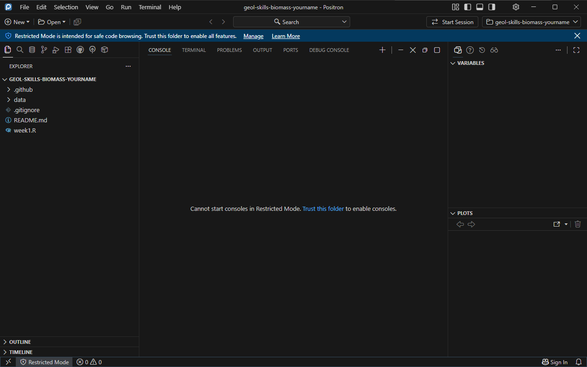
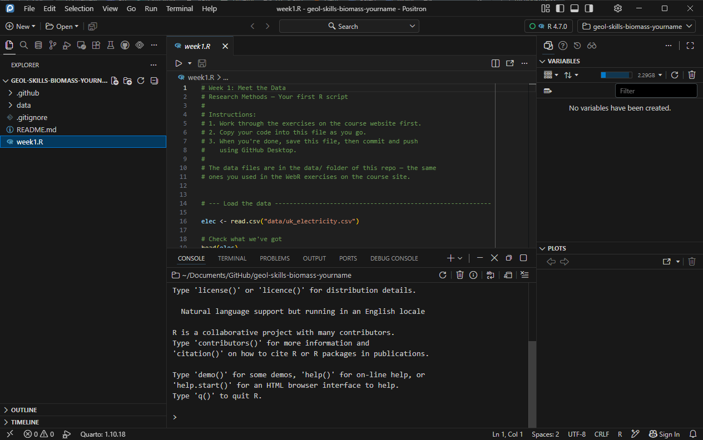

R on your own computer
Download and read a spreadsheet in R
So far you have run R in the browser, where the course data are already waiting for you. Your project uses data you’ll download yourself to your own computer. We’ll use Positron to manage our R code and projects.
Before the Week 6 application session, you’ll need to get Positron up and running; your goal is to load and analyse data from a real spreadsheet. Allow yourself an hour. Ask on the class board if you get stuck.
R and Positron aren’t on AppsAnywhere, but you can install both into your own account, without administrator rights. The installs (hopefully) persist on that computer; if you switch machines, you may have to install again.
Step 1: Install R
- Windows: R for Windows → Download R for Windows. Run the installer and accept every default. Without administrator rights, it installs for you alone: that’s fine.
- Mac: R for macOS. Pick the installer for your processor: Apple silicon (M1 or later) or Intel. Not sure? Apple menu → About This Mac.
Step 2: Install Positron
Positron is an editor, designed to run and manage R scripts (and python too!).
Once R has finished installing, download Positron and install it. On Windows, use the User (not System) installer.
Step 3: Open your repo folder
Positron works on a folder, not a single file. Open the whole repo, so that paths like data/durham_weather.xlsx mean “the data folder in this repo”, just as they did in the browser.
For this homework, use your individual biomass repo (geol-skills-biomass-<your username>), which GitHub Desktop already has on your computer.
- In GitHub Desktop, choose your
biomassrepo, then Repository → Show in Explorer (Mac: Show in Finder). Note where the folder is. - In Positron, File → Open Folder… and choose that folder.
The Explorer panel on the left lists the repo’s files: data, README.md, week1.R.

biomass repo open, in Restricted Mode: R won’t start until you trust the folder.If a blue bar across the top says Restricted Mode, click Trust this folder (or Manage), then Trust. It’s your repo: you are the author.
Step 4: Start R and install two packages
Once you trust the folder, Positron starts R by itself. Click week1.R in the Explorer to open it: your script is at the top, and the Console below it, with a > prompt. The R version shows at the top right. If it says Start Session instead, click it and choose R.

prompt. At the top right, a green circle and R 4.7.0 show that R is running.">> prompt.In the browser, packages were already installed for you. On your own computer you install each package once. Type this in the Console and press Enter:
install.packages(c("readxl", "ggplot2"))readxl reads Excel files; ggplot2 you know. If R asks whether to use a personal library, answer yes. Wait for the > prompt to come back.
You install a package once per computer, but load it with library() every time you start R.
Step 5: Download the spreadsheet
Download durham_weather.xlsx and move it from your downloads folder into the data folder of your biomass repo. The spreadsheet contains 146 years of monthly weather observations from the Durham University Observatory, via the Met Office.
Open it in Excel before you start coding. Which sheet are the data on? What are the columns called? What are the units?
Step 6: Write a script
In Positron, File → New File → R File, and save it (Ctrl-SCtrl-S) as week6.R in the top folder of the repo, next to week1.R.
Type this into the script file. (Typing directly into the Console means there’s no record of your work, so your results will never be reproducible, and correcting errors means starting from scratch.)
library("readxl")
excel_sheets("data/durham_weather.xlsx")
durham <- read_excel("data/durham_weather.xlsx", sheet = "data")
head(durham)
View(durham) # Note Positron's "Summary" paneRun a line by putting the cursor on it and pressing Ctrl-EnterCtrl-Enter. The result appears in the Console. Run the lines one at a time and read each result before going on.
excel_sheets()lists the sheets. The first,notes, is the description; the data are on the sheet calleddata. Most government spreadsheets work like this.- Without
sheet = "data",read_excel()would read the first sheet, the notes. Try it and see. - Blank cells come in as
NA, as in the Week 6 exercise page’s “Mind the gaps”.
Step 7: Your number
What was the average July maximum temperature at Durham over 1991–2020, to two decimal places?
That is the mean of tmax_c for the rows where month is 7 and year is from 1991 to 2020: 30 rows. You have every tool you need from Week 1. Write it into week6.R and run it.
Is that a big number? Compared to what? Work out the same average for 1881–1910.
Step 8: Your test
Has July got warmer since 1881–1910? Keep the two sets of Julys as two vectors, and compare them with t.test(). What is the difference in means, its 95 % confidence interval, and the p-value? Write one sentence that says what they mean.
Then commit week6.R and the spreadsheet in GitHub Desktop, and push.
Extension: Is the t-test valid for this comparison?
This is optional — for students who finish early.
A t-test treats each group as a random sample from one population. Are 30 consecutive Julys like that? Look at the data, and the notes sheet, before you answer.
Your own data
Most of the data you will need comes as a CSV or an Excel file.
| File | Read it with |
|---|---|
.csv |
read.csv("data/my_file.csv") |
.xlsx, .xls |
readxl::read_excel("data/my_file.xlsx") |
Real spreadsheets are messier than durham_weather.xlsx. The arguments of read_excel() handle most of the mess:
| Problem | Argument |
|---|---|
| The data are not on the first sheet | sheet = "Table 5" |
| Title rows above the column names | skip = 4 (the number of rows to skip) |
| Notes below or beside the table | range = "A5:H30" (just that block of cells) |
Missing values levt empty or recorded as strings such as [x] |
na = c("", "[x]") |
read.csv() has skip = and na.strings = for the same jobs.
Then check what came in:
str(my_data)A column that should be numbers but shows chr (text) still contains something that isn’t a number: perhaps a footnote mark, a <5 or a comma in 1,234. Track it down (perhaps with as.numeric(bad_column) and is.na()) and coerce it into something that R will recognize as a number, or set it to NA.
Use a script to do the cleaning: never modify your raw data. That way, anyone (including future you!) can repeat your analysis from the original file, or an updated version thereof; if you tidy a file by hand in Excel, no one can check (and you won’t remember) what you did.
Helpful functions:
- Extract substrings:
substr(); replace text:sub()/gsub() - Replace miscreants:
ifelse(substr(bad_column, 1, 1) == "<", NA, bad_column) - Intuitive string manipulation:
library("stringr")containsstr_remove(),str_replace(),str_trim() - Forced number extraction:
library("readr")’sparse_number()is simple but aggressive: tryparse_number("123.40 mm");parse_number("<5");parse_number("5-10")
One table, several files or sheets
Many sources give one sheet or file per year. Read each in turn, then stack them with rbind() (row-bind). (Column names must match.) Years across the top (2015, 2016, …) suggest tidyr::pivot_longer(), as in Week 2.
If it isn’t CSV or Excel
| You downloaded | Do this |
|---|---|
A .zip |
Unzip it (right-click → Extract All; Mac: double-click), and copy the CSV or xlsx inside. |
An .ods |
Open it in Excel and Save As .xlsx, keeping the original; or install readODS and use read_ods. |
An “Excel” file read_excel() won’t open |
Open in Excel and Save As .xlsx. |
Tab-separated text (.tsv, .txt) |
read.csv("data/my_file.txt", sep = "\t") |
| Text with columns lined up by spaces | read.table("data/my_file.txt", skip = 7, fill = TRUE) |
| Accented names garbled, or an “invalid multibyte string” error | read.csv("data/my_file.csv", fileEncoding = "latin1") |
A map layer (.shp, .gpkg, .tif) |
See Maps and GIS files. |
| JSON | Ask on the class board. |
Changing a file’s format doesn’t count as cleaning it: the data are the same. Add a comment to your script stating which file you converted, and how.
Maps and GIS files
Some data come as a map layer, not a table: shapefiles (.shp), GeoPackages (.gpkg), rasters (.tif). You used these in ArcGIS in GEOL1151. You don’t need to do GIS in R. Turn the map into a table, with one row for each thing you are studying, and read that.
In ArcGIS. Add your sites as points, from a CSV with their coordinates. Then:
- for zones (polygons): Spatial Join, to find which zone each site is in;
- for a grid (raster): Extract Values to Points, to find the value under each site.
Export the attribute table as a CSV and read it with read.csv(). Write the steps you took as comments in your script, so someone else can repeat them.
The crude way, in R. If the layer is a grid of points with coordinates, or you exported one from ArcGIS, take the value of the grid point nearest your site:
grid <- read.csv("data/grid.csv") # columns: easting, northing, value
site_e <- 427000
site_n <- 541000
dist2 <- (grid$easting - site_e)^2 + (grid$northing - site_n)^2
grid$value[which.min(dist2)]As the eastings and northings from British grid references are in metres, dist2 gives the straight-line distance. With latitude and longitude, a degree of longitude is shorter than a degree of latitude away from the equator: multiply the longitude difference by cos(site_lat * pi / 180) first.
Troubleshooting
there is no package called 'readxl'. Step 4 didn’t finish, or you are on a different computer. Run install.packages("readxl").
could not find function "read_excel". The package is installed but not loaded. Run library("readxl") first: put it at the top of every script that needs it.
`path` does not exist. R is looking in the wrong folder, or the file isn’t where you think. Run getwd(): it should print your repo folder. If it doesn’t, you opened a file rather than the folder: File → Open Folder… (Step 3). Check the file is in data/, and that the name matches exactly. Windows sometimes hides the extension.
Sheet 'data' not found. Check the spelling with excel_sheets().
A column of numbers reads as text (chr). See Your own data.
Positron can’t find R. Install R (Step 1) and restart Positron.
Something else. Post the exact error message on the class board, with the code that caused it.